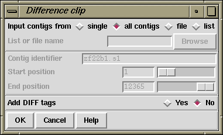

The difference clipping method (which is available from the gap4 Edit menu) works in stages. First it calculates the most likely consensus sequence. Then it compares each reading with that consensus sequence and identifies areas at the ends of the reading where there are enough differences to indicate the possibility of badly aligned bases. The clip points are adjusted accordingly.
To identify the clip points for each reading the algorithm first finds
a good matching
segment near the middle of the reading. Then steps, base by base, from this
point to the left accumulating a score as it goes by using +1
for a match and -2 for a mismatch.
It sets the left clip point at the position of the highest score.
The right clip point is set in an equivalent way.
These new clip points are used only if they are more severe than the
existing ones. The portions of readings which have
been clipped are then tagged using a DIFF tag type. To see
which segments have been clipped use the contig editor search tool.
After clipping the algorithm then identifies any holes (breaks in the contigs) that may have been created and fills them up again by extending the sequence(s) with the fewest number(s) of expected errors.